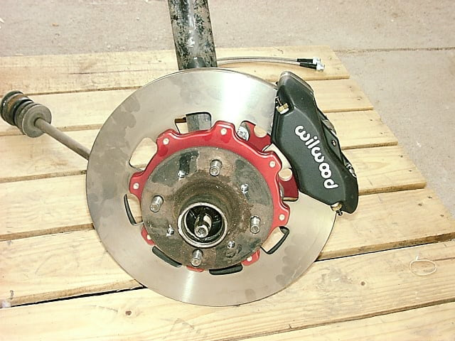

-
Just a quick post to point some things out I found in my Z32 Swap (30mm Aluminum Calipers, OEM Z32 Rotors, Z32 SS Lines).
1. Early z31 dust shield won't work with the later model hubs
Maybe something was said about this and I probably missed it but the inner dia of the brake dust shields are to small for the later model hubs to work. You can bore this out or remove them, otherwise your bearings won't seat properly and you wouldnt want to drive it like this.
2. I used about .2" of washers to center my caliper on my 84AE (Using 16" OEM wheels) and OMG no clearance issues. I can fit my finger between the caliper and the wheel and spin it around and it will just graze my finger. I was very suprised considering some of the clearance issues and possible grinding on some accounts.
3. Using stock master cylinder and I have to say I was worried based off some post about the pedal softening up however the pedal feels great. Just a hair softer however the improvment in overall performance is noticeable. Especially after bedding in the pads. I was running z31 SS lines before, and am using Z32 front ss lines now w/ no issues.
-
86t/AE wheels have a lower offset than the 87+ 16" wheels. That probably has to do with the difference in clearance from the wheel to the caliper.http://z31performance.com/forum/viewtopic.php?f=5&t=147 -
I was running 30mm z32 calipers with my 88 turbo wheels. We also test fit my buddies 87 NA 15" wheels just to see and, yep they cleared as well…Steve88t wrote: 86t/AE wheels have a lower offset than the 87+ 16" wheels. That probably has to do with the difference in clearance from the wheel to the caliper.85 Z31 6.0 LSX turbo 766whp/792wtq
04 GTO, LS6, big cam, porting, N20… underway for summertime daily driver. -
[quote]MrFishHat wrote:Nah, I ditched that project.Originally posted by SATAN
What I did end up doing was…
350z track rotors 12.75"
1990 TT 30mm caliper ($100 rebuild's at checker. $50 if you have a core!)
and just a regular 240sx spacer for the 350z track rotors.
This gets you a pretty good setup. The pads do hang off the rotors slightly but… whatever.
You also have to put some spacers in between the 240sx spacer and the 30mm caliper to get it to center over the rotor. Other than that… Looks great, don't know how well it works yet. I have some Hawk Hp pads that should grab the rotors pretty damn well.85 Z31 6.0 LSX turbo 766whp/792wtq
04 GTO, LS6, big cam, porting, N20… underway for summertime daily driver. -
My friend just asked brake kit from AZC. They still sell Z31 packet. Atlease he got an price quote shipped.Neil86t wrote: Ok so Arizona Z car stopped making the wilwood kit for the z31. What is the difference in the front kit for the Z32? In theory shouldn't it bolt up too?Jukka Kivinen - Europe / Finland - '88 Turbo 2+2 Targa
Datsun Nissan Sports Cars of Finland
http://www.z31turbo.com / http://www.z31na.com -
*Wheeeeeee*
New brakes installed.. Skyline R33 GT-R Brembos. 324x30 discs and Z32tt 17/16" MBC
Now it actually feels like stopping. Last friday i was in racetrack and love those 8)
Jukka Kivinen - Europe / Finland - '88 Turbo 2+2 Targa
Datsun Nissan Sports Cars of Finland
http://www.z31turbo.com / http://www.z31na.com -
Cute rotors kennedy :-D
Here is mine. I am using the later style hubs. Wilwood kit from Arizona Z Car. 6-piston calipers, 13" rotors and stainless lines.
Elitist Prick Black Z owner.
1986 300zx Turbo
2011 Ford F150 Super Crew 4x2 EcoBOOST
1985 Toyota 4Runner, locked, lifted, geared, uglied.

-
I've been reading this thread for a while and I just finished a front caliper and rotor swap on my 87. I also bought new rear calipers. I don't want to lose my e-brake, and I realize that the backing plate for the shoes obviously won't fit directly on the stock knuckle. Does anyone know if it's possible to fabricate a way to mount the z32 backing plates to the z31? I'd love to make this work so I can have a unified look to the car, not to mention slightly better braking. -
How similar are 280zx brakes to an 84 n/a Z31's?
Looking at the images of brake upgrades offered by Arizona Z car for the 280zx, they share the same basic hub design on the front. Anyone got a 280zx and a 4 stud z31?
This is the image that has made me curious:

Further investigation appears that vented disk 4 runner 4 pot brake calipers and n/a z31 rotors work together on a s130, with a spacer between the hub and brake rotor… So the other way around must be true, just with a spacer on the caliper instead.
I think I'm on to something here.
-
Yeah, you just proved that Arizona Z Car provides a Wilwood kit for the z31. Also you can make any caliper from any car work with a caliper spacer and proper rotor.86na - BlueZ
Shiro #366 - Kouki Monster
85t - Mr Tickles -
Most of the stuff for Z31's is an upgrade for 280ZX's, and most of it is actually bolt-on.Mitchd03 wrote: How similar are 280zx brakes to an 84 n/a Z31's?
Looking at the images of brake upgrades offered by Arizona Z car for the 280zx, they share the same basic hub design on the front. Anyone got a 280zx and a 4 stud z31?
This is the image that has made me curious:
[img]http://www.arizonazcar.com/510-9.JPG[/img
Further investigation appears that vented disk 4 runner 4 pot brake calipers and n/a z31 rotors work together on a s130, with a spacer between the hub and brake rotor… So the other way around must be true, just with a spacer on the caliper instead.
I think I'm on to something here.
using the Z31 hub, I belive, is only for S30's (which have non-vented rotors) I think you may be able to use the stock 280ZX hubs if doing the swap on an S130 (test fitted in the junkyard, and it doesn't fit, so the spacer would still be needed…
imho, if you want to keep the 4 lug, just do a pad and rotor change/upgrade, as the Toyota calipers actually have less surface area on the pad (they only have "more clamping force" which I would think would only make things worse [hotter] on a dinky 10" rotor)irony.cc
-
What I meant was, could using the 13" brake rotor designed to fit the 280zx from AZC on a 4 stud z31 with the Wilwood caliper kit that Neil86t has work together? -
buy it and see lol I'm not sure, and I'm also not too sure why you would want to stay with 4 lugs…irony.cc
-
Agreed. If you are gonna drop some coin on a BBK you might as well go 5 lug.PurePontiacKid wrote: buy it and see lol I'm not sure, and I'm also not too sure why you would want to stay with 4 lugs…Elitist Prick Black Z owner.
1986 300zx Turbo
2011 Ford F150 Super Crew 4x2 EcoBOOST
1985 Toyota 4Runner, locked, lifted, geared, uglied.
-
You can re-drill rotors to 4 lug. S13 guys do it all the time.Mitchd03 wrote: What I meant was, could using the 13" brake rotor designed to fit the 280zx from AZC on a 4 stud z31 with the Wilwood caliper kit that Neil86t has work together?
But yeah, if your gonna drop coin on a BBK go 5 lug conversion.86na - BlueZ
Shiro #366 - Kouki Monster
85t - Mr Tickles

Copyright © 2006–. All rights reserved. Privacy Policy